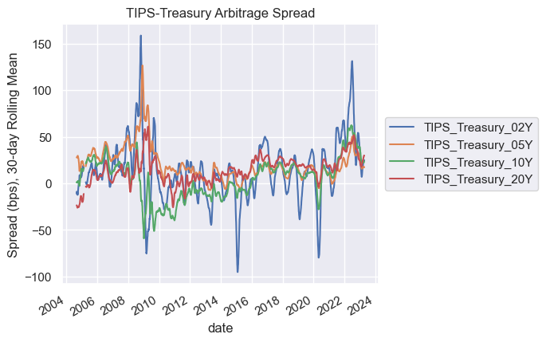

Explore Basis Trade Data#
import pandas as pd
import polars as pl
from matplotlib import pyplot as plt
import seaborn as sns
sns.set()
from settings import config
import load_bases_data
DATA_DIR = config("DATA_DIR")
MANUAL_DATA_DIR = config("MANUAL_DATA_DIR")
Arbitrage Spreads#
df = load_bases_data.load_combined_spreads_wide(data_dir=MANUAL_DATA_DIR)
# df = df.ffill(limit=5).dropna()
# df.info()
df.info()
<class 'pandas.core.frame.DataFrame'>
DatetimeIndex: 5563 entries, 2001-12-04 to 2024-02-28
Data columns (total 32 columns):
# Column Non-Null Count Dtype
--- ------ -------------- -----
0 Box_06m 4435 non-null float32
1 Box_12m 4423 non-null float32
2 Box_18m 4435 non-null float32
3 CDS_Bond_HY 4280 non-null float32
4 CDS_Bond_IG 4437 non-null float32
5 CIP_AUD 5563 non-null float32
6 CIP_CAD 5456 non-null float32
7 CIP_CHF 5562 non-null float32
8 CIP_EUR 5562 non-null float32
9 CIP_GBP 5561 non-null float32
10 CIP_JPY 5493 non-null float32
11 CIP_NZD 5374 non-null float32
12 CIP_SEK 4894 non-null float32
13 Eq_SF_Dow 5106 non-null float32
14 Eq_SF_NDAQ 5090 non-null float32
15 Eq_SF_SPX 5088 non-null float32
16 TIPS_Treasury_02Y 4687 non-null float32
17 TIPS_Treasury_05Y 4687 non-null float32
18 TIPS_Treasury_10Y 4687 non-null float32
19 TIPS_Treasury_20Y 4687 non-null float32
20 Treasury_SF_02Y 4211 non-null float32
21 Treasury_SF_05Y 4575 non-null float32
22 Treasury_SF_10Y 4801 non-null float32
23 Treasury_SF_20Y 4836 non-null float32
24 Treasury_SF_30Y 2412 non-null float32
25 Treasury_Swap_01Y 5563 non-null float32
26 Treasury_Swap_02Y 5551 non-null float32
27 Treasury_Swap_03Y 5515 non-null float32
28 Treasury_Swap_05Y 5515 non-null float32
29 Treasury_Swap_10Y 3900 non-null float32
30 Treasury_Swap_20Y 3106 non-null float32
31 Treasury_Swap_30Y 3106 non-null float32
dtypes: float32(32)
memory usage: 738.8 KB
df.tail()
| Box_06m | Box_12m | Box_18m | CDS_Bond_HY | CDS_Bond_IG | CIP_AUD | CIP_CAD | CIP_CHF | CIP_EUR | CIP_GBP | ... | Treasury_SF_10Y | Treasury_SF_20Y | Treasury_SF_30Y | Treasury_Swap_01Y | Treasury_Swap_02Y | Treasury_Swap_03Y | Treasury_Swap_05Y | Treasury_Swap_10Y | Treasury_Swap_20Y | Treasury_Swap_30Y | |
|---|---|---|---|---|---|---|---|---|---|---|---|---|---|---|---|---|---|---|---|---|---|
| date | |||||||||||||||||||||
| 2024-02-22 | NaN | NaN | NaN | NaN | NaN | 8.251404 | 17.293579 | 17.858582 | 5.813416 | 8.302063 | ... | -16.325012 | -74.609985 | -211.763977 | 4.56 | -13.77 | -21.139999 | -29.330000 | -41.220001 | -69.800003 | -78.449997 |
| 2024-02-23 | NaN | NaN | NaN | NaN | NaN | 6.583923 | 18.220825 | 12.748291 | 4.431885 | 8.169006 | ... | -15.239990 | -59.401978 | -190.694977 | 6.46 | -13.30 | -20.480000 | -29.780001 | -42.310001 | -71.440002 | -77.029999 |
| 2024-02-26 | NaN | NaN | NaN | NaN | NaN | 5.156189 | 18.380493 | 10.448364 | 2.971252 | 8.405518 | ... | -14.094971 | -65.319977 | -183.165985 | 5.58 | -12.50 | -20.879999 | -28.650000 | -42.099998 | -71.699997 | -77.980003 |
| 2024-02-27 | NaN | NaN | NaN | NaN | NaN | 6.320984 | 17.697937 | 18.856445 | 6.171143 | 8.237305 | ... | -18.984985 | -63.867981 | -194.381989 | 5.60 | -12.95 | -22.200001 | -30.320000 | -43.040001 | -72.839996 | -79.169998 |
| 2024-02-28 | NaN | NaN | NaN | NaN | NaN | 8.978394 | 18.759705 | 27.148132 | 8.660278 | 8.211975 | ... | -12.888000 | -79.199005 | -191.681000 | 4.94 | -12.23 | -21.049999 | -28.900000 | -42.540001 | -71.650002 | -77.550003 |
5 rows × 32 columns
df.reindex(sorted(df.columns), axis=1).filter(regex=("Treasury_SF_*")).info()
<class 'pandas.core.frame.DataFrame'>
DatetimeIndex: 5563 entries, 2001-12-04 to 2024-02-28
Data columns (total 5 columns):
# Column Non-Null Count Dtype
--- ------ -------------- -----
0 Treasury_SF_02Y 4211 non-null float32
1 Treasury_SF_05Y 4575 non-null float32
2 Treasury_SF_10Y 4801 non-null float32
3 Treasury_SF_20Y 4836 non-null float32
4 Treasury_SF_30Y 2412 non-null float32
dtypes: float32(5)
memory usage: 152.1 KB
df.reindex(sorted(df.columns), axis=1).filter(regex=("Treasury_SF_*")).plot()
<Axes: xlabel='date'>
(
df
.loc["2023":,:]
.reindex(sorted(df.columns), axis=1)
.filter(regex=("Treasury_SF_*"))
.plot()
)
plt.ylim([-300,200])
(-300.0, 200.0)

(
df
.loc["2024-07":,:]
.reindex(sorted(df.columns), axis=1)
.filter(regex=("Treasury_SF_*"))
.plot()
)
plt.ylim([-300,200])
(-300.0, 200.0)
df.reindex(sorted(df.columns), axis=1).filter(regex=("Treasury_SF_*")).plot()
plt.ylim([-300,200])
(-300.0, 200.0)
WINDOW = 30
ax= df.reindex(sorted(df.columns), axis=1).filter(regex=("TIPS_*")).rolling(WINDOW).mean().plot()
# plt.ylim([-100,100])
box = ax.get_position()
ax.set_position([box.x0, box.y0, box.width * 0.8, box.height])
# Put a legend to the right of the current axis
ax.legend(loc='center left', bbox_to_anchor=(1, 0.5))
plt.ylabel(f"Spread (bps), {WINDOW}-day Rolling Mean")
plt.title("TIPS-Treasury Arbitrage Spread");

WINDOW = 30
ax= df.reindex(sorted(df.columns), axis=1).filter(regex=("Treasury_SF_*")).rolling(WINDOW).mean().plot()
# plt.ylim([-100,100])
box = ax.get_position()
ax.set_position([box.x0, box.y0, box.width * 0.8, box.height])
# Put a legend to the right of the current axis
ax.legend(loc='center left', bbox_to_anchor=(1, 0.5))
plt.ylabel(f"Spread (bps), {WINDOW}-day Rolling Mean")
plt.title("Treasury Cash Futures Arbitrage Spread\nFutures-implied risk-free rate minus OIS rate");
WINDOW = 30
ax= df.reindex(sorted(df.columns), axis=1).filter(regex=("Treasury_Swap_*")).rolling(WINDOW).mean().plot()
# plt.ylim([-100,100])
box = ax.get_position()
ax.set_position([box.x0, box.y0, box.width * 0.8, box.height])
# Put a legend to the right of the current axis
ax.legend(loc='center left', bbox_to_anchor=(1, 0.5))
plt.ylabel(f"Spread (bps), {WINDOW}-day Rolling Mean")
plt.title("Treasury Swap Arbitrage Spread");
WINDOW = 30
ax= df.reindex(sorted(df.columns), axis=1).filter(regex=("CIP_*")).rolling(WINDOW).mean().plot()
# plt.ylim([-100,100])
box = ax.get_position()
ax.set_position([box.x0, box.y0, box.width * 0.8, box.height])
# Put a legend to the right of the current axis
ax.legend(loc='center left', bbox_to_anchor=(1, 0.5))
plt.ylabel(f"Spread (bps), {WINDOW}-day Rolling Mean")
plt.title("CIP Arbitrage Spread");
df
| Box_06m | Box_12m | Box_18m | CDS_Bond_HY | CDS_Bond_IG | CIP_AUD | CIP_CAD | CIP_CHF | CIP_EUR | CIP_GBP | ... | Treasury_SF_10Y | Treasury_SF_20Y | Treasury_SF_30Y | Treasury_Swap_01Y | Treasury_Swap_02Y | Treasury_Swap_03Y | Treasury_Swap_05Y | Treasury_Swap_10Y | Treasury_Swap_20Y | Treasury_Swap_30Y | |
|---|---|---|---|---|---|---|---|---|---|---|---|---|---|---|---|---|---|---|---|---|---|
| date | |||||||||||||||||||||
| 2001-12-04 | NaN | NaN | NaN | NaN | NaN | 52.145401 | NaN | 13.314026 | 9.184860 | 11.789230 | ... | NaN | NaN | NaN | 7.60 | NaN | NaN | NaN | NaN | NaN | NaN |
| 2001-12-05 | NaN | NaN | NaN | NaN | NaN | 46.005219 | NaN | 12.012970 | 5.848602 | 15.825348 | ... | NaN | NaN | NaN | 8.10 | NaN | NaN | NaN | NaN | NaN | NaN |
| 2001-12-06 | NaN | NaN | NaN | NaN | NaN | 49.061096 | NaN | 16.064270 | 10.815582 | 12.939957 | ... | NaN | NaN | NaN | 4.80 | NaN | NaN | NaN | NaN | NaN | NaN |
| 2001-12-07 | NaN | NaN | NaN | NaN | NaN | 58.456711 | NaN | 15.164368 | 10.896408 | 21.666672 | ... | NaN | NaN | NaN | 5.30 | NaN | NaN | NaN | NaN | NaN | NaN |
| 2001-12-10 | NaN | NaN | NaN | NaN | NaN | 53.464584 | NaN | 12.022736 | 8.434219 | 14.334442 | ... | NaN | NaN | NaN | 2.20 | NaN | NaN | NaN | NaN | NaN | NaN |
| ... | ... | ... | ... | ... | ... | ... | ... | ... | ... | ... | ... | ... | ... | ... | ... | ... | ... | ... | ... | ... | ... |
| 2024-02-22 | NaN | NaN | NaN | NaN | NaN | 8.251404 | 17.293579 | 17.858582 | 5.813416 | 8.302063 | ... | -16.325012 | -74.609985 | -211.763977 | 4.56 | -13.77 | -21.139999 | -29.330000 | -41.220001 | -69.800003 | -78.449997 |
| 2024-02-23 | NaN | NaN | NaN | NaN | NaN | 6.583923 | 18.220825 | 12.748291 | 4.431885 | 8.169006 | ... | -15.239990 | -59.401978 | -190.694977 | 6.46 | -13.30 | -20.480000 | -29.780001 | -42.310001 | -71.440002 | -77.029999 |
| 2024-02-26 | NaN | NaN | NaN | NaN | NaN | 5.156189 | 18.380493 | 10.448364 | 2.971252 | 8.405518 | ... | -14.094971 | -65.319977 | -183.165985 | 5.58 | -12.50 | -20.879999 | -28.650000 | -42.099998 | -71.699997 | -77.980003 |
| 2024-02-27 | NaN | NaN | NaN | NaN | NaN | 6.320984 | 17.697937 | 18.856445 | 6.171143 | 8.237305 | ... | -18.984985 | -63.867981 | -194.381989 | 5.60 | -12.95 | -22.200001 | -30.320000 | -43.040001 | -72.839996 | -79.169998 |
| 2024-02-28 | NaN | NaN | NaN | NaN | NaN | 8.978394 | 18.759705 | 27.148132 | 8.660278 | 8.211975 | ... | -12.888000 | -79.199005 | -191.681000 | 4.94 | -12.23 | -21.049999 | -28.900000 | -42.540001 | -71.650002 | -77.550003 |
5563 rows × 32 columns
# ax= (
# df
# .reindex(sorted(df.columns), axis=1)
# .filter(regex=("CIP_*"))
# .loc["2024-07":,:]
# .dropna()
# .plot()
# )
# plt.ylim([-100,100])
# box = ax.get_position()
# ax.set_position([box.x0, box.y0, box.width * 0.8, box.height])
# # Put a legend to the right of the current axis
# ax.legend(loc='center left', bbox_to_anchor=(1, 0.5))
# plt.ylabel(f"Spread (bps)")
# plt.title("CIP Arbitrage Spread");